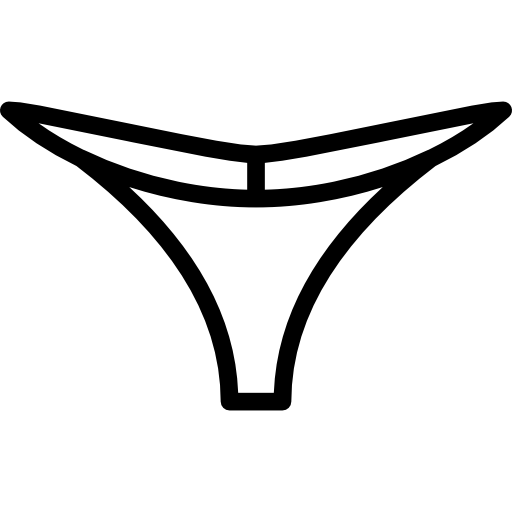

HUIDIG WEER
24.7°C
BewolktGevoel: 24.4°C
WIND & REGEN
Windkracht3 Bft
Windsnelheid13.6 km/u NNO
Windvlagen27.0 km/u
Regenkans0%
Regen0.0 mm
GETIJ
GetijOpkomend
Volgende vloed15:14 • 3.38 m
Volgende eb21:25 • 0.36 m
ATMOSFEER
Luchtvochtigheid53%
Zicht40.9 km
Luchtdruk1007 hPa
ZON & UV
UV-kracht4
Zon op07:28
Zon onder19:28
WEERSVOORSPELLING
Zondag 27 september
BewolktWind: 15.0 km/u N
17.1° / 23.4°Regen: 3%Maandag 28 september
Licht bewolktWind: 11.8 km/u ZZW
15.5° / 24.4°Regen: 35%Dinsdag 29 september
Lichte regenWind: 28.9 km/u Z
18.5° / 22.3°Regen: 86%BALEAL NOORD
22,5 km • 26 min rijden
Weer:Half bewolkt | 20.6°C | min 17.5°C | max 21.1°C
Wind:13 km/u uit N
Windvlagen:23.4 km/u
Neerslag nu:0 mm
Regenkans:0%
Regen vandaag:0 mm
Water:17.0°C
Golven:1.9 m
Golfstatus:Matig
Waarschuwingen:Geen actieve waarschuwingen
Stringetjes kans

BALEAL ZUID
22,3 km • 27 min rijden
Weer:Half bewolkt | 20.6°C | min 17.5°C | max 21.1°C
Wind:13 km/u uit N
Windvlagen:23.4 km/u
Neerslag nu:0 mm
Regenkans:0%
Regen vandaag:0 mm
Water:17.0°C
Golven:1.9 m
Golfstatus:Matig
Waarschuwingen:Geen actieve waarschuwingen
Stringetjes kans